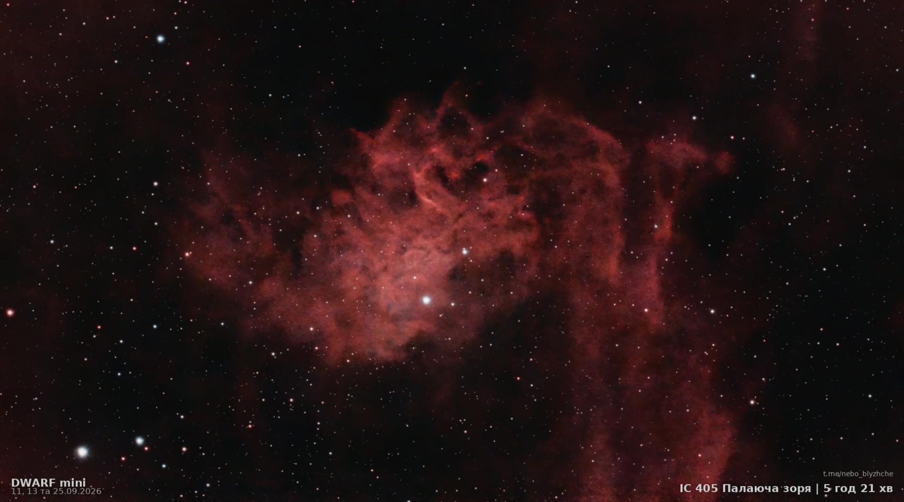
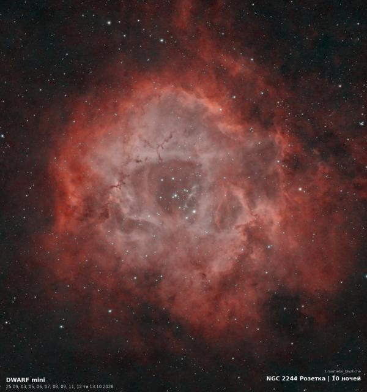
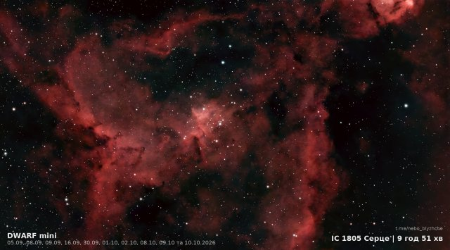
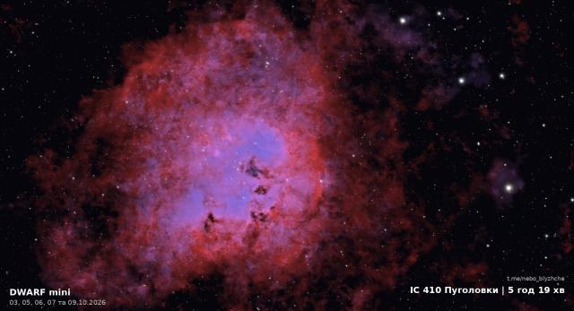
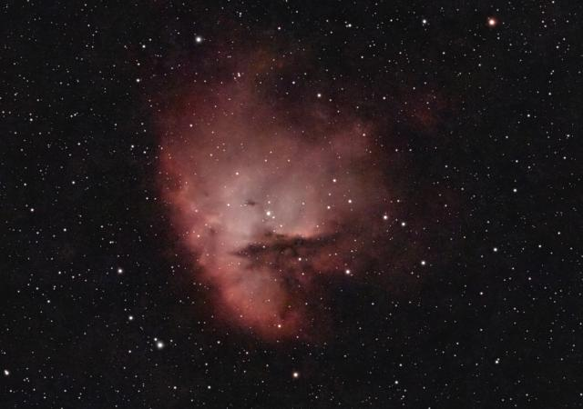
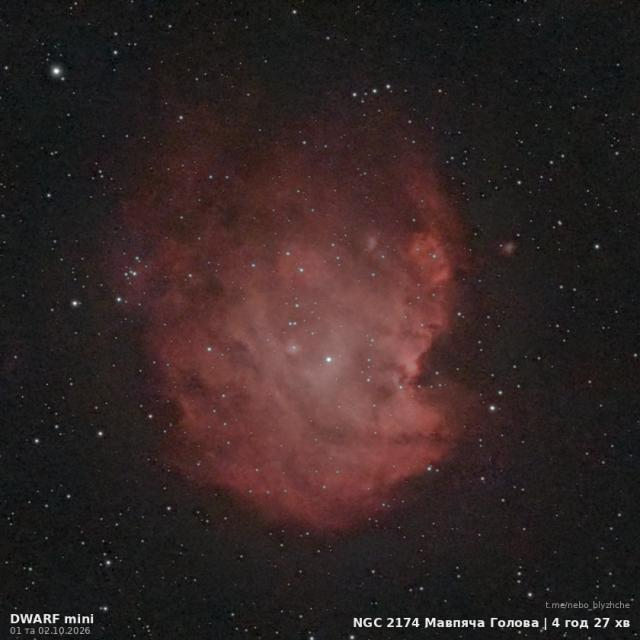
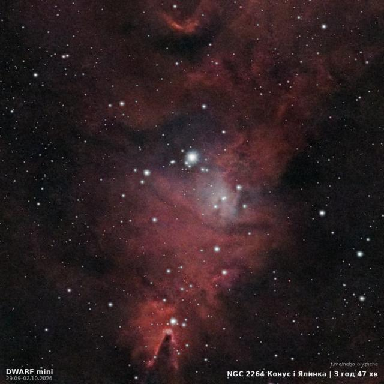
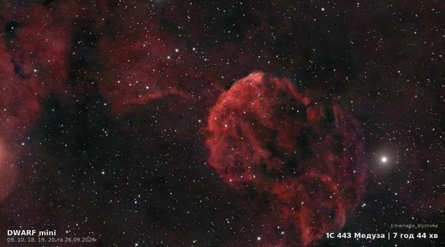
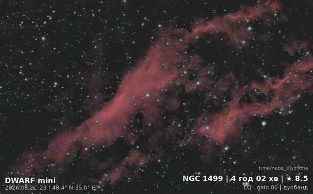

Flaming Star Nebula
IC 405 · Nebula · Auriga

- Status
- Captured
- Light gathered
- 5 h 19 min
- Goal
- 4 h
- Nights
- 3
- First and last night
- 11 September … 25 September
- Image from
- 25 September 2026
- Telescope
- DWARF Mini, city balcony
Flaming Star Nebula (IC 405), a nebula in Auriga. 5 h 19 min of light gathered over 3 nights from a city balcony in Ukraine with a DWARF Mini smart telescope.
3D flight through the image
A short loop of a 3D flight through this image. Full flights come out daily on TikTok, Instagram and YouTube Shorts.
More images
All objects






